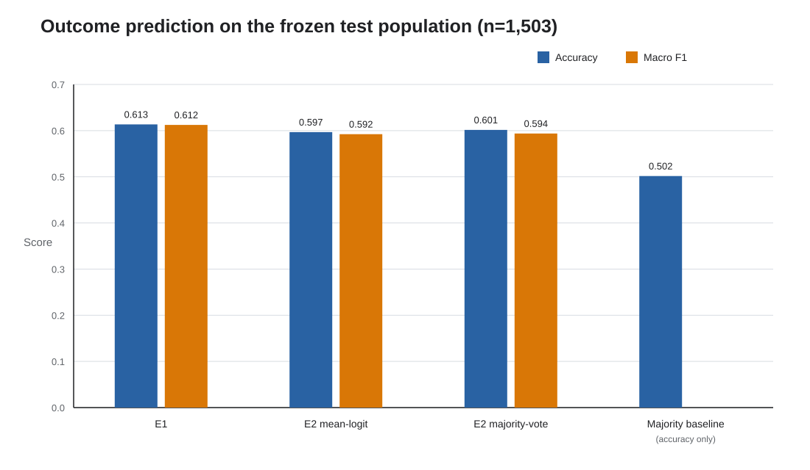
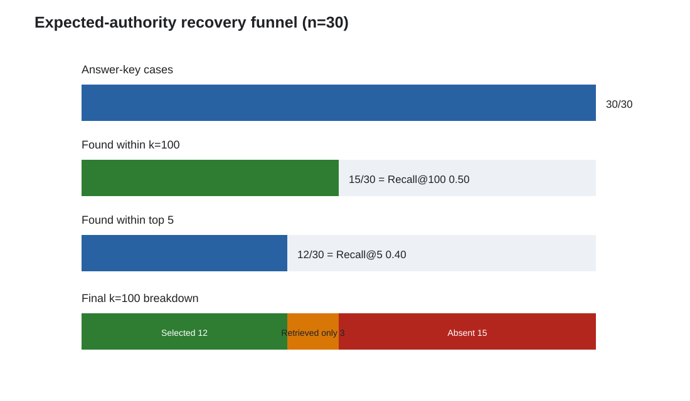
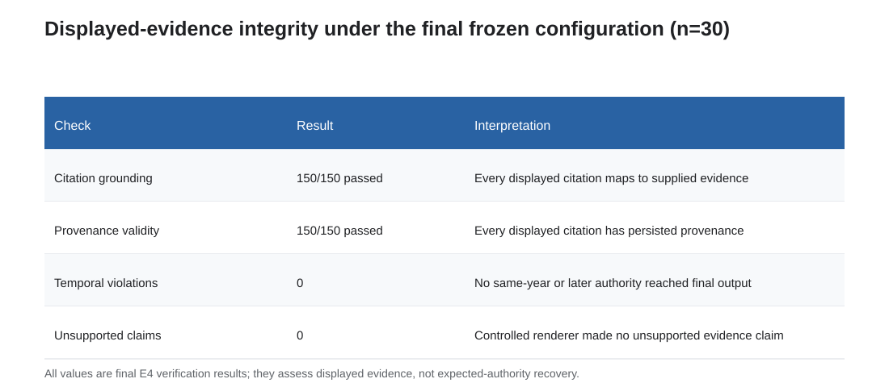
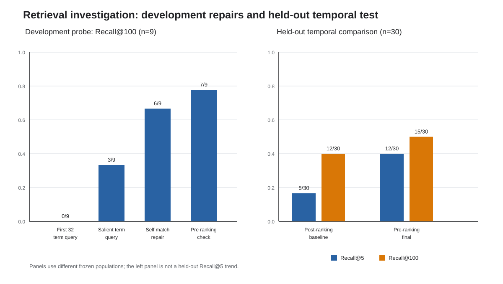
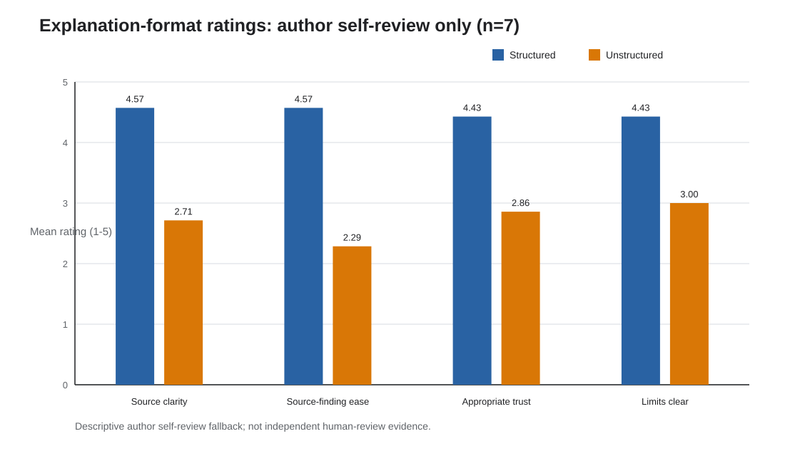

AI-assisted legal research can fail even when its prose appears plausible: a cited authority may not exist, may not contain the attributed passage, may post-date the matter being analyzed, or may never have been retrieved. This work develops and evaluates a temporally constrained, provenance-preserving evidence pipeline for historical Indian Supreme Court judgments. The implementation uses a purpose-split design: ILDC Single supports facts-only outcome baselines and supplies labels for a 30-case evidence-augmented prediction subset, while a 39,069-PDF eCourts-derived collection supports precedent retrieval and citation verification. A corpus audit repaired 12 of 15 PDF instances with corrupted embedded text and transparently excluded three. A separate alignment audit showed that only 11 of 5,391 superficially matching ILDC/eCourts identifiers passed content alignment, motivating a reusable content-alignment gate instead of naive identifier matching. On 1,503 eligible ILDC test cases, TF-IDF with logistic regression achieved 0.6134 accuracy and 0.6123 macro F1, exceeding corrected InLegalBERT chunk-and-pool results of 0.5968 and 0.5924. On the 30 source-verified evidence cases, both evidence-augmented E3 and verified E4 achieved 0.6667 accuracy and 0.6032 macro F1 by reusing the frozen E2 checkpoint without further training. The final pre-ranking temporal configuration recovered 12 expected authorities in the five displayed sources and 15 within the top 100. All 150 displayed citations passed grounding, provenance, and temporal checks, with no unsupported claims. A seven-case author self-review preferred structured explanations in all pairs, but this is not independent user evidence. The central finding is therefore bounded: deterministic temporal and provenance controls can make displayed evidence fully auditable, while authority recovery remains incomplete and must be evaluated separately.
Legal research systems operate in a domain where fluent output is not enough. A response can be linguistically convincing while citing a nonexistent case, attributing a nonexistent paragraph to a real case, or relying on law that was unavailable at the relevant time. In Pooja Ramesh Singh v. Jammu and Kashmir Bank Ltd. & Anr., 2026 INSC 668, the Supreme Court of India set aside tribunal decisions after identifying nonexistent authorities, incorrect citations, and fabricated passages apparently produced through AI-assisted research. The Court distinguished legitimate assistance from unverified reliance and emphasized continued human control over adjudication ([6]). The case makes a practical systems point: legal AI requires evidence that a reviewer can locate, inspect, and verify, not merely an answer that sounds legal.
This project addresses that systems problem in a historical Indian Supreme Court setting. Given facts extracted from an ILDC judgment, the evidence pipeline retrieves earlier Supreme Court materials, retains stable source and passage locators, excludes the query judgment and aligned duplicates, renders only selected verbatim evidence, and verifies each displayed citation against the persisted corpus and retrieval run. E1 and E2 provide facts-only outcome baselines. A later revision adds outcome prediction to E3 and E4 through inference-time evidence augmentation with the unchanged E2 checkpoint, while continuing to report evidence-retrieval quality separately from prediction accuracy.
The work makes four project-specific contributions. First, it constructs an auditable dual-corpus workflow joining ILDC outcome cases to an eCourts-derived evidence collection through content validation. The audit quantifies a substantial identifier-namespace problem: 5,391 superficial ID matches yielded only 11 content-aligned pairs. Second, it documents three bounded retrieval corrections-full-input salient query terms, a coverage-qualified self-match guard, and temporal filtering before BM25 ranking-and freezes the resulting configuration. Third, it evaluates expected-authority recovery separately from citation grounding, provenance, and temporal integrity, showing that perfect verification of displayed evidence can coexist with incomplete retrieval recall. Fourth, it compares a sparse outcome baseline with corrected long-document InLegalBERT, reports an inference-time evidence-augmentation extension on the 30-case subset, and records a small, explicitly non-independent observation about structured explanation format.
The claims are deliberately narrow. The project does not establish legal correctness for every retrieved authority, deploy an autonomous legal advisor, or show that evidence retrieval improves outcome prediction. It evaluates a research prototype on three distinct populations: 1,503 outcome cases, 30 source-verified evidence cases, and seven paired explanation examples.
Let a historical query judgment have ILDC identifier q, query year Yq, and frozen facts-only text Fq. Let each candidate evidence passage p belong to an eCourts source judgment with a stable source identifier, exact decision date, citation metadata, page and character boundaries, and stored passage text. The implemented temporal policy admits p only when its source decision year is strictly earlier than Yq. A same-year source is treated as ambiguous because ILDC supplies no exact query date, and a source with missing or unparseable date metadata is excluded.
The evidence task has three separable questions:
Outcome prediction is a fourth, contextual task. E1 and E2 predict the ILDC binary label from the frozen facts-only input on 1,503 cases. On the 30-case answer-key subset, E3 and E4 additionally predict the same label from the facts followed by selected verbatim evidence. Prediction and evidence metrics retain separate denominators so that a classification score cannot stand in for evidence quality and a traceable citation cannot be mistaken for complete authority recovery.
Indian legal NLP has substantial work on judgment prediction, domain-adapted language models, document structure, and emerging retrieval-augmented assistants. The remaining gap addressed here is not generic legal question answering. It is the combined auditability problem created when a historical case is linked to an external judgment corpus: source identity must be validated across datasets, candidate evidence must be restricted to material available at the query time, displayed passages must remain tied to exact provenance, and retrieval failure must remain visible even when every displayed citation is valid.
The novelty claim is therefore bounded to the evaluated workflow. The project does not claim to be the first legal RAG system, the first Indian legal model, or the first temporal legal benchmark. Its contribution is an end-to-end, reproducible combination of: (i) quantified cross-corpus content-alignment gating; (ii) conservative year-level pre-ranking eligibility; (iii) exact passage and retrieval-run verification; and (iv) separate reporting of authority recovery and citation validity on a source-first answer key. The identifier audit is independently useful: it demonstrates that mechanically similar ILDC and eCourts identifiers do not establish judgment identity and provides a reusable content-based alternative.
| Work | Primary task and setting | Relationship to this project | Boundary of the present contribution |
|---|---|---|---|
| [1] ILDC for CJPE | Indian Supreme Court outcome prediction and explanation over ILDC | Supplies the judgment-prediction setting from which the local ILDC Single splits are drawn | This project uses a smaller fixed ILDC subset for E1/E2 and adds a separate, provenance-bearing evidence corpus; it does not reproduce ILDC's prediction architecture |
| [2] InLegalBERT / Indian legal pre-training | Domain-adapted language models evaluated on Indian legal tasks, including court-appeal prediction | Motivates the pinned InLegalBERT E2 baseline | The present evaluation corrects long-document truncation through chunk-and-pool and does not assume domain pre-training must beat a sparse baseline |
| [3] TaxFlow | Hybrid RAG and temporally filtered statutory question answering for Indian tax law | Shares the concern that legal retrieval must respect changing law and authoritative sources | This project studies historical Supreme Court precedent retrieval, cross-corpus identity, exact displayed-passage provenance, and a source-verified authority key rather than tax-law answer generation |
| [4] CaseFacts | U.S. Supreme Court legal claim verification and precedent retrieval with Supported, Refuted, and Overruled labels | Demonstrates that legal truth and authority validity evolve and that unrestricted retrieval can introduce noisy sources | This project uses Indian judgments, queries from historical case facts, and verifies source identity, temporal eligibility, and exact retrieval provenance rather than claim labels |
| [5] LexTime | Temporal ordering of events in U.S. federal complaints | Establishes temporal reasoning as a distinct legal-language challenge | The implemented task is not event ordering; it enforces historical evidence availability through metadata before ranking |
These lines of work motivate different parts of the system, but none is used as a directly comparable numerical baseline because the jurisdictions, tasks, corpora, and denominators differ. The present paper compares only experiments run under its own frozen populations and reports external work for positioning rather than metric ranking.
The method also draws on established information-retrieval and document-processing foundations. BM25 provides the probabilistic sparse-ranking basis for the evidence index [7], while Tesseract supplies the OCR engine used in the targeted corpus repair [8]. Retrieval-augmented generation situates retrieval as an explicit non-parametric source of evidence and provenance [15], although the present renderer is deliberately non-generative and evidence-bound.
Adjacent legal benchmarks clarify the task boundary. COLIEE evaluates case-law and statute retrieval and entailment [9]; LegalBench measures multiple forms of legal reasoning by large language models [10]; and CaseHOLD tests selection of cited-case holdings and the value of legal-domain pre-training [11]. Indian legal NLP has also examined long judgment summarization with practitioner evaluation [12]. These tasks motivate retrieval, long-document handling, and evaluation discipline, but they do not share this project's historical eligibility rule or cross-corpus provenance protocol.
Finally, empirical work on legal hallucinations shows why fluent legal output cannot substitute for source verification [13], while research on language models and fiduciary standards illustrates the broader interest in testing legal reasoning against explicit standards [14]. Together, these studies support the paper's emphasis on bounded claims, inspectable evidence, and retained human responsibility.
The final operational questions are exactly the three canonical research questions:
The main controlled grounding comparison for RQ1 is E2 (facts-only legal-language baseline) versus E3 (the same setup plus BM25-retrieved evidence). E1 (TF-IDF with logistic regression) is a traditional predictive baseline reported for context; the E1-versus-E2 outcome comparison does not itself answer RQ1.
The plan's hypotheses are reported with their final disposition rather than rewritten to match the results:
Outcome prediction was added to E3 and E4 in a later revision, extending the original evidence-only implementation by reusing the E2 checkpoint through inference-time evidence augmentation. These secondary prediction analyses sit under RQ1 (grounding comparison) and RQ2 (integrity of the evidence path) respectively; there is no fourth research question. E3 and E4 metrics are reported separately on the same 30 cases; no canonical E4-minus-E3 prediction-delta metric is defined.
The definitions in Table 1 fix the denominators and pass/fail criteria used throughout the evaluation.
Table 1. Operational definitions used in the frozen evaluation.
| Term | Implemented definition |
|---|---|
| Facts-only input | Text retained before the earlier of a recognized closing/dispositive cue and the 60% character cap, sentence-aligned where possible; inputs below 10% retention or 100 words are excluded |
| Temporal existence | An eCourts source has a parseable exact decision date in corpus metadata |
| Temporal applicability | For query year Y, an authority is eligible only if its decision year is less than Y; same-year, later-year, and missing-date sources are excluded |
| Temporal effectiveness | The eligibility predicate is applied in the BM25 candidate relation before ranking and LIMIT 100, so ineligible sources cannot consume returned depth |
| Expected-authority Recall@100 | Share of the 30 answer-key cases whose predefined authority occurs anywhere in the returned top-100 candidates |
| Expected-authority Recall@5 | Share of the 30 answer-key cases whose predefined authority is among the five selected and displayed sources |
| Provenance validity | A displayed item reproduces the stored source ID, citation, decision date, court, PDF/page/character locator, exact passage, and retrieval-run membership |
| Citation groundedness | Every material displayed proposition is the verbatim text of a supplied evidence passage and links to that evidence item |
| Authority consistency | A verified displayed source matches the answer-key authority by stable source ID, normalized citation, or normalized title plus exact decision date |
| Evidence-augmented prediction input | Frozen facts extract followed by the five selected verbatim passages in selection order; labels, citations, scores, dates, provenance fields, and rendered boilerplate are excluded from model input |
| Structured explanation | Fixed order: legal issue, applicable authorities, supporting evidence, evidence-bound conclusion, and uncertainty |
| Self-review fallback | Ratings completed by the project author after the outside-review path was unavailable; not independent human-review evidence |
FEER and FCER were removed from the reported metrics on the project mentor's guidance. Temporal integrity remains reported directly through candidate eligibility and displayed-citation violation counts.
The study used two corpora for different experimental purposes rather than treating them as interchangeable records. ILDC Single supplied the fixed case-level splits and binary outcome labels used in E1 and E2 and in the later E3/E4 prediction extension. The local release contains 7,593 judgments: 5,082 training cases, 994 validation cases, and 1,517 test cases. E1 and E2 received the same deterministically extracted pre-decision text. After the shared sufficiency rule excluded 14 test records, their common held-out prediction population contained 1,503 cases; E3/E4 prediction uses only the existing 30-case answer-key subset.
E3 and E4 used the Indian Supreme Court Judgments collection obtained from the public eCourts-derived archive. It provides judgment PDFs and evidence metadata absent from ILDC, including citations, exact decision dates, court and case identifiers, source paths, and page and character locators. The downloaded collection covered 1950-2020 and contained 39,069 English PDF instances. After quality repair and exclusions, 39,066 PDFs yielded 2,343,435 labeled chunks; 2,036,981 unique chunks were loaded into the PostgreSQL provenance store and SQLite FTS5 BM25 index.
This purpose split follows the information available in each source. ILDC is suitable for fixed-split outcome prediction but exposes only a year in the case identifier and lacks the citation and passage provenance needed for evidence verification. The eCourts-derived collection supports dated, traceable retrieval but is not used as a substitute outcome-label benchmark. Cross-corpus links are used only after alignment checks.
A full audit found that the stored JSONL text was valid UTF-8 but that 15 PDF instances, representing 14 source IDs, had missing or badly corrupted embedded text. The failures were concentrated in image-backed Supreme Court Reports from the 1980s and 1990s, with one mojibake-affected 2018 file. Fixed checks covered absent embedded text, control characters, mojibake markers, visible-ASCII ratio, and English-token ratio.
Only the flagged instances were rendered and processed with English Tesseract OCR at 250 DPI [8]. Twelve passed the same post-OCR quality gate and were restored. Three one-page PDFs remained below threshold and were transparently excluded instead of being forced into the index. Raw PDFs were preserved unchanged, exclusions were recorded, and the provenance store and BM25 index were rebuilt from the accepted corpus.
Converting an eCourts identifier of the form YYYY INSC N to the ILDC-like string YYYY_N produced 5,391 syntactic candidates. Only 11 passed content alignment; 5,380 were identifier-namespace collisions. The problem was not a single offset or isolated scrape defect, and it was concentrated in legacy material where similar numeric suffixes frequently represented different judgments.
The corrected pipeline treats identifier equality only as candidate generation. A reusable gate evaluates title or party identity together with direct six-token phrase overlap before a mapping may drive deduplication or retrieval exclusion. Combining syntactic and title/party candidates yielded 8,927 deduplicated candidate pairs: 1,304 were accepted and 7,623 rejected. Retrieval also applies a full-document self-match safeguard so that an unmapped query copy can be removed without suppressing an earlier authority merely quoted by the later judgment.
This audit is a methodological contribution of the project: naive ID equality is unreliable for this dataset pair, while content-alignment gating supplies an auditable alternative usable across answer-key validation, development probes, leakage checks, and retrieval-time exclusion.
The authority evaluation uses 30 ILDC fixed-test cases. Test membership was checked before external verification. For each accepted case, the query judgment was inspected through a primary source or accepted eCourts mirror, one earlier authority was recorded independently of system retrieval, and that authority was reconciled to the corpus through stable source ID, normalized citation, or normalized title plus exact date for parallel reporter forms.
The identifier-collision discovery triggered a read-only audit of the then-current mappings: 20 passed, nine resolved sources failed direct content alignment, and one source was unresolved. 2013_35 was relinked to a content-aligned source, and the other nine flagged records were replaced by new fixed-test cases. The final audit recorded 30/30 direct-content passes.
The sample is not era-balanced: five query cases are from the 1970s, 13 from the 1980s, nine from the 1990s, two from the 2000s, and one from the 2010s. The 1980s account for 43.3% of the sample. This resulted from source and alignment gates rather than deliberate temporal sampling and is treated as a limitation.
The system has four auditable layers:
The architecture is deliberately extractive at the answer layer. It favors inspectability over fluent synthesis: material legal text is displayed verbatim, and the conclusion is fixed non-inferential wording tied to evidence IDs.
The executed study comprises four operational stages. E1 and E2 are facts-only outcome-prediction baselines evaluated on the same 1,503 eligible cases. E3 retrieves and presents provenance-linked prior authorities for a separate, source-verified subset of 30 cases, then emits an evidence-augmented outcome label. E4 applies hard citation, provenance, duplicate, and temporal checks to E3's displayed evidence before invoking the identical shared predictor and emitting its outcome label.
E1 and E2 share ildc-predecision-facts-v1. The extractor retains text preceding the earlier of a recognized closing/dispositive cue and 60% of the document, moving the boundary to a preceding sentence end when sufficient text remains. Cases below 10% retention or 100 words are excluded. Neither prediction path uses retrieval. Model and threshold selection uses validation data, and the held-out test split is evaluated after selection.
Outcome prediction was added to E3 and E4 in a later revision, extending the original evidence-only implementation. Both stages reuse frozen E2 checkpoint-6318 without fine-tuning. Their shared input builder concatenates the frozen facts extract and selected verbatim evidence in selection order, applies the same 512-token windows with 50-token overlap, pools window logits by their mean, and selects the class by argmax. Both use seed 202607 and configuration e3e4-evidence-augmented-inlegalbert-checkpoint6318-v1.
The checkpoint was trained on facts-only inputs; using it with facts plus retrieved passages is an inference-time distribution shift rather than evidence-aware fine-tuning. E3/E4 prediction metrics are therefore reported descriptively on the fixed 30-case subset and are not directly compared with the 1,503-case E1/E2 population. No canonical E4-minus-E3 prediction-delta metric is defined.
E1 uses lowercased, Unicode-normalized TF-IDF unigrams and bigrams with sublinear term frequency, minimum document frequency two, L2 normalization, and at most 100,000 features. Logistic-regression values C = 0.1, 1.0, 10.0 are compared by validation accuracy, with smaller C breaking a tie. The selected C = 10.0 pipeline is refitted once on eligible training and validation cases and evaluated once on test data. The seed is 202605.
E2 fine-tunes law-ai/InLegalBERT revision b5ecfed8ed6cf9d25a3cb8225a8c52f161f7401a with a new two-label head. It supersedes a 256-token prefix run that truncated 99.20% of eligible test inputs. Each facts-only document is instead represented by overlapping 512-token windows with 50-token overlap. Training uses three epochs, seed 202607, learning rate 2e-5, weight decay 0.01, warm-up ratio 0.1, gradient checkpointing, and gradient accumulation.
Mean pooling of window logits before softmax is primary, and checkpoint selection uses validation document-level mean-logit accuracy only. Majority vote is a secondary comparison, not a post-test selection rule. All 1,503 eligible test documents and 9,576 test windows are covered.
The final query builder, tfidf-segment-salient-terms-v1, segments the full facts-only input, removes procedural-report boilerplate, scores terms deterministically, retains section and article cues, and emits at most 32 unique terms. These terms query SQLite FTS5 BM25 backed by PostgreSQL provenance.
The frozen configuration is week11-bm25-salient-terms-preranked-temporal-v3. Only judgments with decision year strictly earlier than the query year enter the candidate relation before BM25 ordering and the top-100 cutoff. Candidate sources are checked against the alignment-gated crosswalk and a direct-content self-match rule requiring at least 100 shared six-token occurrences and 80% unique candidate-source phrase coverage. A non-learned selector chooses up to five passages in BM25 order, with no more than one passage per source.
The controlled E3 renderer emits the issue, authorities, verbatim passages with provenance, an evidence-bound non-inferential conclusion, and uncertainty. It cannot retrieve, rerank, invent an authority, paraphrase a material proposition, or infer an outcome. The separate prediction stage runs after selection and places its outcome in a top-level result object rather than altering the evidence-bound conclusion.
E4 receives the E3 answer, retrieval-run ID, query identity and year, and persisted corpus records. Each displayed item must exist in the corpus, reproduce its exact passage and provenance, belong to the recorded retrieval run, avoid the query and aligned duplicates, and pre-date the query year. Failure rejects the citation. After successful explanation and citation verification, E4 calls the same shared predictor on the same facts and selected passage text used by E3.
Authority consistency is separate. A verified source matches the independently constructed key by stable source ID, normalized citation, or normalized title plus exact date. A fully valid citation may therefore differ from the one expected authority without being labelled substantively irrelevant.
Three bounded investigations produced the final retrieval configuration. First, full-input salient terms replaced the legacy first 32 terms, moving development-probe Recall@100 from 0/9 to 3/9 under the then-current self-match rule. Second, the self-match guard gained the 80% source-coverage condition, increasing development Recall@100 to 6/9 and withdrawing the earlier broad lexical-mismatch claim. Third, the existing earlier-year rule moved into the BM25 candidate relation. A final development check reached 7/9 at k=100; on the 30-case held-out comparison, this final change moved Recall@5 from 5/30 to 12/30 and Recall@100 from 12/30 to 15/30 without losing any of the prior 12 top-100 successes.
The nine-case development sequence and 30-case held-out temporal comparison are not one learning curve. Figure 4 separates them. After the final test, data versions, model revisions, seeds, query construction, candidate depth, selection cardinality, duplicate controls, temporal policy, and renderer/verifier versions were frozen.
E4 is not a single-variable causal ablation of E3. It jointly checks corpus existence, exact passage and provenance identity, retrieval-run membership, duplicate status, and temporal eligibility. E3 and E4 share final retrieval and selected evidence. Aggregate reliability therefore cannot be attributed to one verification component; the supported claim concerns the complete bundle.
Every eCourts chunk has a stable identifier derived from its source path and passage location. The persisted record retains source ID, source case ID when available, citation, exact decision date, court, local PDF file, page number, character start and end, and chunk text. Retrieval runs record query ID, year, query text, index version, temporal policy, rank, score, and temporal status.
The answer renderer may expose only supplied selected evidence. Material content remains verbatim; authority cards and conclusions refer to evidence IDs. Verification then checks corpus existence, exact field equality, run membership, duplicate status, and temporal eligibility. Answer-key matching occurs only after a displayed citation has passed these checks. Parallel reporter forms are reconciled through stable source identity or normalized title and exact decision date rather than loose string similarity.
This protocol distinguishes four failure states that a single “correct citation” label would collapse: a fabricated or altered citation, a real citation not retrieved for this query, a retrieved citation that violates temporal or duplicate policy, and a fully valid citation that does not match the predefined expected authority. Keeping these states separate is necessary to locate failures accurately.
The project reports three populations: 1,503 eligible fixed ILDC test cases for E1/E2 outcome prediction; 30 source-verified answer-key cases for E3/E4 outcome prediction and authority recovery, including 150 displayed citations for verification; and seven paired cases for explanation-format review. They are not aggregated or treated as a common denominator.
E1 achieved accuracy 0.6134 and macro F1 0.6123. Corrected E2 mean-logit pooling achieved accuracy 0.5968 and macro F1 0.5924; its secondary majority-vote result was 0.6015 accuracy and 0.5937 macro F1. Both primary models exceeded majority-class accuracy of 0.5017, while E1 led E2 on this frozen task.
On the separate 30-case answer-key subset, evidence-augmented E3 achieved accuracy 0.666667 and macro F1 0.603175. E4 achieved the same values. Both used the identical checkpoint, input construction, selected evidence, and decision rule; all E4 evidence passed verification without changing the predictor input. These subset results are descriptive and are not directly comparable to the 1,503-case E1/E2 values.

Figure 1. Accuracy and macro F1 for E1, corrected E2 mean-logit and majority-vote pooling, and the majority baseline on the eligible ILDC test population (n=1,503).
This result does not show that domain pre-training is generally ineffective. It shows that, under the implemented facts extraction, data size, training budget, window aggregation, and frozen settings, the sparse baseline performed better. The per-case disagreement analysis below also shows non-identical errors. E1 is reported here as the traditional contextual baseline; the RQ1 grounding comparison is E2 versus E3, reported through the retrieval analyses in Section 11.3 and the evidence-augmented subset results above.
On the 30-case answer-key subset, expected-authority Recall@5 was 0.40 (12/30) and Recall@100 was 0.50 (12 selected + 3 retrieved-but-unselected = 15/30 found within k=100). The remaining 15 authorities were absent at k=100.
Authority-consistency precision was 0.080000, recall 0.400000, and F1 0.133333. The precision denominator is 150 displayed citations, not raw candidates. Because the renderer displays five citations per case and the key credits one authority, the fixed-cardinality ceiling is 30/150 = 0.200000. Observed precision is 40% of that ceiling. The superseded post-ranking round displayed 135/30 = 4.5 citations per case, whereas the final pre-ranking round displays exactly 150/30 = 5; this expected shift follows ineligible candidates no longer consuming returned depth.
The remaining displayed citations are not independently annotated for legal relevance and should not be read as incorrect; see Section 12.3 and Limitation 13.4 for full discussion.
All 150 displayed citations were grounded, provenance-valid, and temporally eligible, with zero unsupported claims. Verification success and authority recovery are therefore distinct: the system can verify everything it displays without retrieving every expected source.

Figure 2. Expected-authority recovery on the source-verified answer-key subset (n=30): 12 selected, three retrieved but unselected, and 15 absent at k=100.

Figure 3. Displayed-evidence integrity under the final configuration (n=30 queries; 150 displayed citations): 150/150 grounding and provenance checks passed, with no temporal violations or unsupported claims.
The final figures followed three bounded changes: full-input salient terms replaced opening first-term queries; the direct self-match guard was repaired to distinguish quotation from source copying; and the earlier-year predicate moved before BM25 ranking. The last change increased held-out Recall@5 from 5/30 to 12/30 and Recall@100 from 12/30 to 15/30, with no regression among prior top-100 successes.

Figure 4. Retrieval investigation pathway. The nine-case development probe covers the salient-query and self-match repairs; the separate held-out comparison (n=30) covers the move from post-ranking to pre-ranking temporal filtering.
The 2013_35/1980_105 contrast shows why temporal candidate capacity is not the only factor. The former remained absent despite 79 eligible candidates in its earlier raw top 100, whereas the latter was recovered despite only three eligible candidates and became a top-five hit. Residual lexical and ranking limitations remain.
The seven-case paired review was an author self-review fallback, not independent reviewer evidence. Structured presentation was preferred in 7/7 pairs. Structured versus unstructured mean ratings were 4.57 versus 2.71 for source clarity, 4.57 versus 2.29 for source-finding ease, 4.43 versus 2.86 for appropriate trust, and 4.43 versus 3.00 for clarity of limitations. The perceived advantage was largest when displayed evidence included apparent retrieval noise and narrower for two coherent cases.

Figure 5. Structured and unstructured rubric means from the author self-review fallback (n=7 paired cases; not independent human-review evidence).
The observation concerns navigation and perceived trust, not legal correctness. The self-review also identified a system-level weakness: identical generic uncertainty wording did not respond to the evidence quality of 2013_35.
The analysis is read-only and uses only final frozen outputs. Reconstructed E1 and inference-only E2 predictions exactly reproduced their metrics before per-case joining. Across 1,503 cases, both were correct on 684 and both wrong on 368; E1 alone was correct on 238 and E2 alone on 213. In the 30-case evidence subset, both were correct on 18, E1 alone on three, E2 alone on three, and both were wrong on six. Table 2 reports these overlaps with their population-specific denominators.
Table 2. Outcome-error overlap counts by evaluation population.
| Population | Both correct | E1 only correct | E2 only correct | Both wrong |
|---|---|---|---|---|
| Full fixed-test population | 684/1,503 | 238/1,503 | 213/1,503 | 368/1,503 |
| Answer-key subset | 18/30 | 3/30 | 3/30 | 6/30 |
These patterns show complementary E1/E2 errors without changing E1's aggregate lead. In the later 30-case evidence-augmented run, E2 was wrong while E3 and E4 were correct for two cases (1974_36 and 1984_136). E3-correct/E4-wrong and E3-wrong/E4-correct each occurred in 0/30 cases because verification did not change the selected evidence or shared predictor input. Four cases had an expected authority within the top 100 but an incorrect E3/E4 prediction (2008_1629, 1981_187, 1982_29, and 1985_40). No correct E3/E4 prediction had an unsupported displayed citation.
| Retrieval outcome | Count | Cases |
|---|---|---|
| Retrieved and selected | 12/30 | 2008_1629, 1995_322, 1995_375, 1986_176, 1977_99, 1981_187, 1980_222, 1980_105, 1995_425, 2002_944, 1982_29, 1988_96 |
| Retrieved but not selected | 3/30 | 1980_133 (rank 15), 1981_55 (rank 28), 1985_40 (rank 78) |
| Absent at k=100 | 15/30 | 1997_792, 1993_185, 1971_295, 1974_36, 1986_378, 1984_136, 2013_35, 1980_217, 1978_33, 1977_145, 1995_412, 1995_403, 1986_397, 1994_632, 1992_84 |
Worked example -
1985_40(retrieval noise made visible).Input, facts-only extract: "the respondent is the owner of a factory at atul ... manufacturing dyes chemicals and pharmaceuticals ... synthetic organic dyestuffs ... were added as item 14d in the first schedule to the central excise and salt act 1944"
Retrieved and displayed:
[1984] 3 S.C.R. 930(1984_3_930_941::p0009::c001);[1972] 3 S.C.R. 770(1972_3_770_783::p0005::c001);[1980] 3 S.C.R. 1109(1980_3_1109_1121::p0001::c005);[1971] 3 S.C.R. 506(1971_3_506_521::p0003::c002); and[1973] 1 S.C.R. 822(1973_1_822_840::p0004::c004). The expected authority,[1964] 2 S.C.R. 888, was retrieved at rank 78 but was not selected for display.What the structured view exposed: E1 concerns excise valuation and the "related person" definition for Atul Products, while E2 concerns an industrial dispute at Atul, E3 concerns rayon and silk sales tax, and E5 concerns cigarette excise duty. In the paired author self-review, the separate authority index and E1-E5 evidence blocks made these apparent subject-matter mismatches easier to detect than the same citations and passages in continuous prose. This is an illustration of navigation and trust calibration, not an independent annotation that the alternative citations are legally irrelevant.
The middle bucket isolates selection failure: each expected authority was available but outside the five displayed sources. The absent bucket requires improvement before selection, through query representation, lexical matching, authority-aware ranking, or corpus coverage.
No displayed evidence failed E4 verification. On the applicable interpretation, there were 0/30 cases in which E3 displayed evidence that E4 rejected. In contrast, 18/30 cases did not display the one predefined authority. These include the three selection misses and 15 top-100 misses. The 138 nonmatching displayed citations are not independently annotated for substantive relevance, so they cannot be declared legally incorrect.
The final candidate log contained 3,000/3,000 eligible candidates, and all 150 displayed citations were eligible. In a five-case explanation-faithfulness check, every evidence reference resolved to the exact persisted retrieved chunk. The dominant residual failure is thus authority recovery, while component-level causes remain entangled.
The study covers English-language Indian Supreme Court judgments in ILDC Single and the English eCourts-derived PDF collection. It does not evaluate other Indian languages, High Court or lower-court material, separately versioned statutes, or cross-jurisdictional transfer.
Targeted OCR restored 12 of 15 affected PDF instances; three were excluded, and repaired text may retain minor noise. ILDC provides no gold facts/reasoning boundary. The deterministic facts rule can retain some reasoning or omit facts near a boundary, despite fixed validation and reproducibility.
The evidence evaluation has 30 source-verified cases, with 13 from the 1980s. It is neither large nor era-balanced and should not be presented as representative of the full ILDC test set or all Indian legal research.
The answer key records one expected authority per query, not every relevant source. Authority inconsistency is therefore a reproducible reference mismatch, not a substantive legal-relevance judgment for alternative citations.
Half the expected authorities remained absent at k=100. The contrast between 2013_35 and 1980_105 shows that temporal capacity alone does not explain misses; lexical relevance, ranking, selection, and corpus coverage remain possible contributors.
ILDC query dates are year-only. Same-year evidence is conservatively excluded even if it might pre-date the query on an unavailable exact date. The experiment does not model changes in precedential treatment or provision-level statutory validity.
Day-level query dates are not available in ILDC's public release without independently and manually verifying each case's exact decision date against a primary source; this is a dataset-level constraint, not a parsing limitation in the implemented pipeline.
E4 evaluates several integrity checks together. The results establish bundle behavior but cannot isolate the causal contribution of one verification component.
The seven-case review is a non-random author self-review, not independent usability or legal-correctness evidence. Any subsequent blinded LLM-based comparison of the same packets is exploratory presentation evaluation only and likewise does not constitute independent human evaluation. In addition, generic uncertainty text did not adapt to the comparatively coherent evidence for 2013_35, indicating uncalibrated caution.
This is a semester-scale prototype, not a production service. The controlled scope limits model breadth, retrieval variants, answer-key annotation, independent review, and deployment testing. Results apply to the frozen implementation and samples rather than all users, courts, domains, or changing corpora. The researcher interface is a static local demo rather than the full React/Spring production-style stack; latency, memory, and compute efficiency metrics are not reported; and no standalone architecture-diagram file ships beyond the in-text architecture description and results figures.
Planned follow-up work. The highest-value evaluation extension is an era-balanced answer key of 75-100 cases, large enough to support a paired significance test such as McNemar's test between retrieval configurations. A separate blinded review should use independent raters and report inter-annotator agreement, such as Fleiss' kappa. A hybrid dense-sparse retrieval comparison is also planned to test whether semantic retrieval closes residual lexical misses while retaining the present temporal and provenance controls. These are revision-stage extensions consistent with the existing future-work scope, not claims of the current evaluation.
The system is designed as a legal-research aid, not an adjudicator or provider of legal advice. E3/E4 now emit experimental outcome predictions, but the controlled renderer states no legal conclusion beyond supplied evidence and the prediction is kept in a separate top-level field. A human reviewer remains responsible for deciding whether retrieved material is relevant, current, authoritative, and applicable to a real matter. This allocation aligns with the concern in Pooja Ramesh Singh that AI may assist legal work but cannot displace human verification and responsibility.
Risk controls are fail-closed. Evidence with missing dates, same-year ambiguity, later dates, target identity, or audited duplication is not displayed. A citation must resolve to exact corpus text and the correct retrieval run; altered or unsupported material is rejected. Stable source and passage locators make verification possible without trusting the renderer's prose.
Governance also requires transparent negative results. The project preserves the discarded 256-token E2 run, superseded retrieval configurations, identifier-collision correction, answer-key replacements, OCR exclusions, and self-review fallback status. Evaluation populations and denominators remain separate, and alternative citations are not called irrelevant without annotation. Frozen configurations and machine-readable artifacts support replay and audit.
The source corpora contain public judgments, but public availability does not remove privacy or misuse concerns. This prototype does not expose an end-user search service or automate consequential decisions. Any future deployment would require access controls, updated source and licensing review, privacy assessment, independent legal evaluation, monitoring for corpus change, and a defined correction process.
This study built a provenance-preserving and temporally constrained evidence workflow for historical Indian Supreme Court research. It retains separate evidence and prediction measurements even after the later addition of E3/E4 evidence-augmented outcome labels, producing a clearer account than a single end-to-end score would provide.
On the 1,503-case outcome task, the simple TF-IDF/logistic-regression E1 baseline outperformed corrected InLegalBERT E2 under the frozen settings. This is a result about the implemented experiment, not a general rejection of legal-domain pre-training. Reusing the E2 checkpoint without further training, both evidence-augmented E3 and verified E4 achieved 0.6667 accuracy and 0.6032 macro F1 on the separate 30-case subset; this inference-time distribution-shift result is descriptive rather than directly comparable to the full-test baselines. On the same 30-case evidence task, three bounded retrieval investigations culminated in week11-bm25-salient-terms-preranked-temporal-v3. Expected-authority Recall@100 reached 15/30 and Recall@5 reached 12/30, leaving a documented recovery gap. At the same time, every one of 150 displayed citations passed grounding, provenance, and temporal checks, with no unsupported claims. Verification succeeded for what the system displayed; it did not guarantee that the system found the expected authority or predict the outcome correctly.
The seven-case author self-review preferred structured presentation in every pair, but the evidence is small and non-independent. It supports iteration on explanation design, not a general user-study claim. The review's boilerplate-uncertainty finding also shows that traceable evidence still requires better communication of retrieval quality.
Finally, the cross-corpus audit found that only 11 of 5,391 syntactic ID matches were content-aligned. Treating identifier equality as a candidate hint and requiring content validation is therefore a substantive methodological lesson for this dataset pair. Together, the findings support a restrained conclusion: legal-research systems benefit from explicit temporal, identity, and provenance controls, but those controls must be evaluated alongside, not instead of, retrieval coverage and human review.
| Paper content | Controlling repository artifact |
|---|---|
| Corpus and alignment | corpus/dataset_manifest.md; artifacts/corpus_quality_rebuild.md; corpus/dedup_report.md |
| E1/E2 methodology and results | config/e1_baseline.json; config/e2_chunk_pool.json; artifacts/e1_e2_comparison.json |
| Retrieval and verification | config/evidence_selection.json; config/grounded_answer.json; config/citation_verification.json |
| Frozen E3/E4 evidence evaluation | artifacts/week11_temporal_prerank_evaluation.json; config/week11_evaluation_round.json |
| E3/E4 evidence-augmented prediction | config/e3_e4_evidence_augmented_prediction.json; artifacts/e3_e4_evidence_augmented_evaluation.json |
| Error analysis | artifacts/week12_error_analysis.md; artifacts/e3_e4_prediction_error_analysis.md |
| Explanation review | artifacts/week13_review_summary.json; artifacts/week13_review_status.json |
| Results inventory and figures | artifacts/week14_results_evidence_inventory.json; artifacts/figures/ |